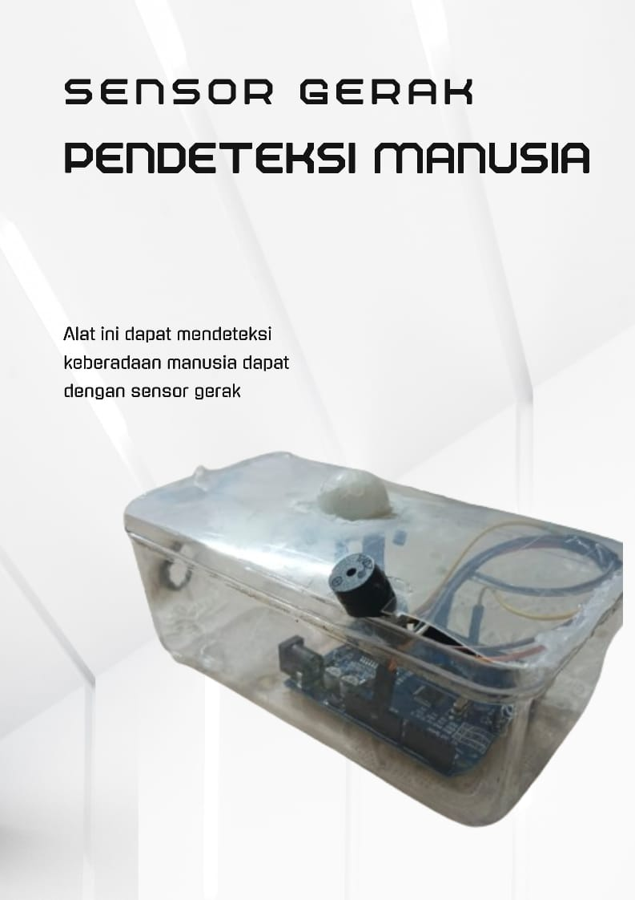
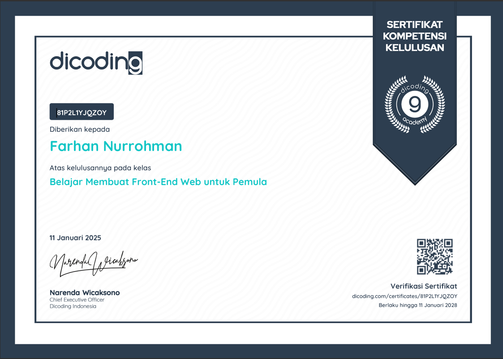
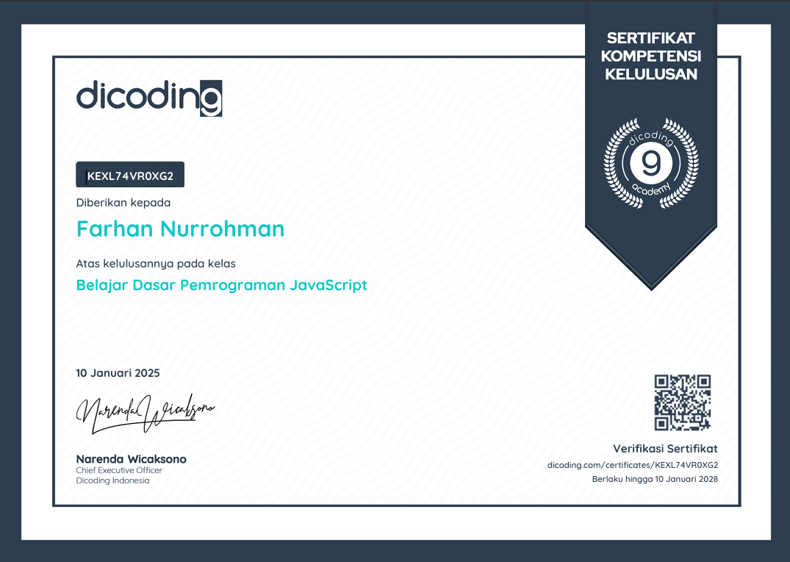

Karya dan Proyek Saya

Pembuatan Sensor Gerak
Pembuatan sensor ini adalah untuk mencegah kemalingan dan tugas projek matkul Jaringan Komputer.

Bootcamp Dicoding
Mengikuti bootcamp dicoding Belajar Membuat Front-End Web Untuk Pemula IDCamp 2024.

Bootcamp Dicoding
Mengikuti bootcamp dicoding Belajar Dasar Pemrograman JavaScript IDCamp 2024..